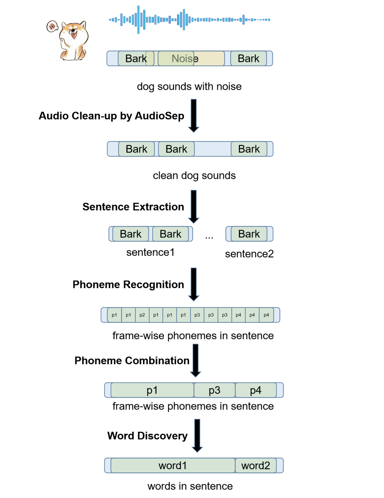

This paper delves into the pioneering exploration of potential communication patterns within dog vocalizations and transcends traditional linguistic analysis barriers, which heavily relies on human priori knowledge on limited datasets to find sound units in dog vocalization.
© 2020-2024 Sinong Wang. All rights reserved.